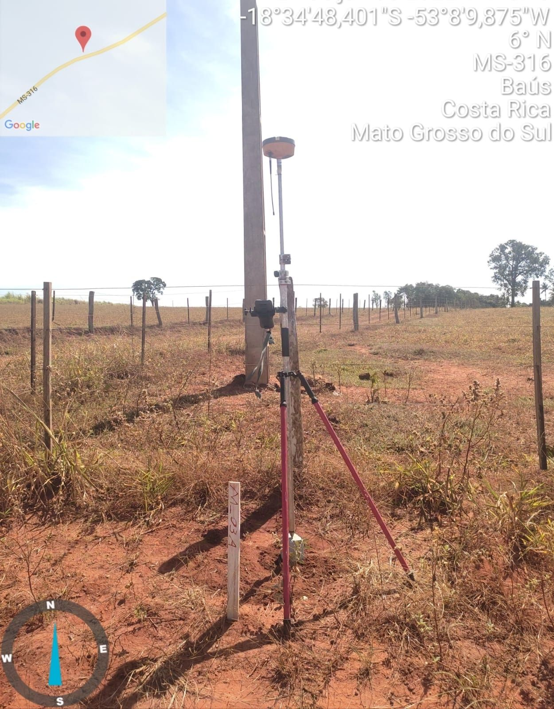
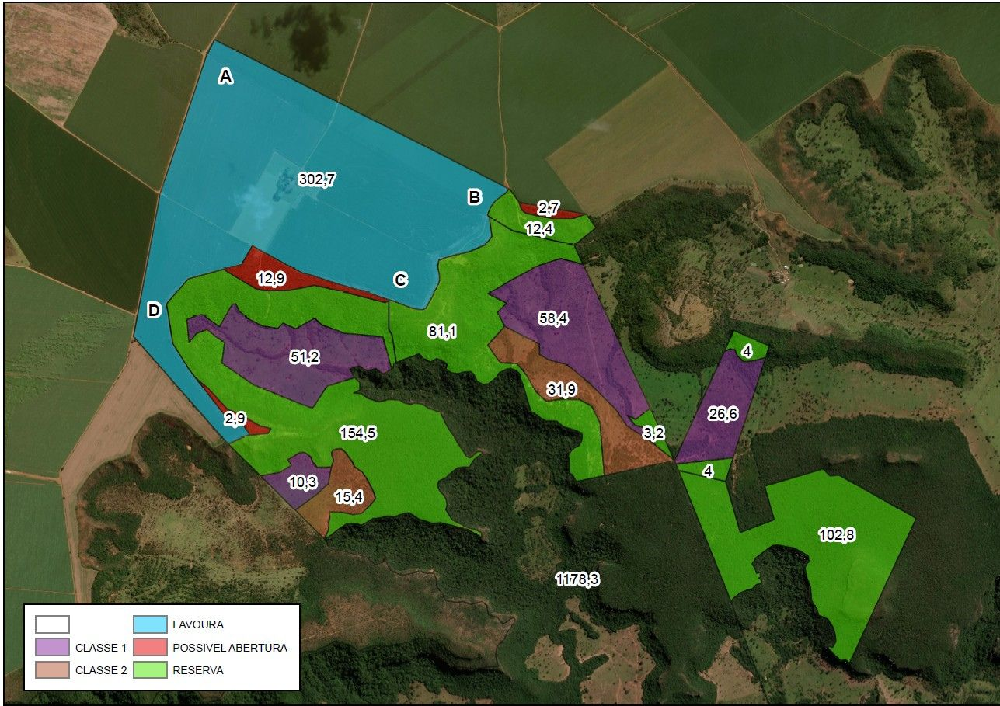
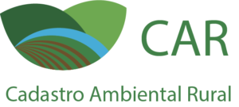
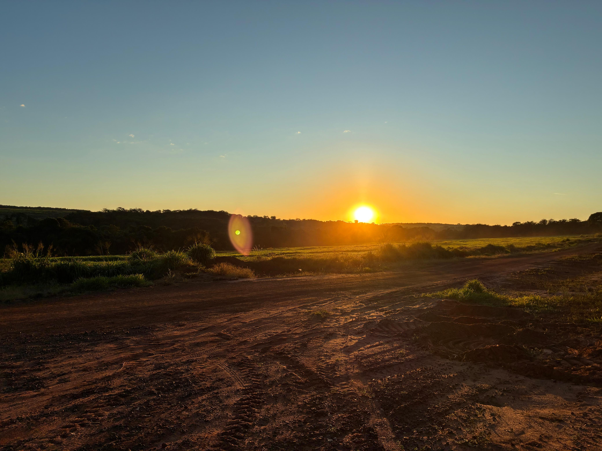
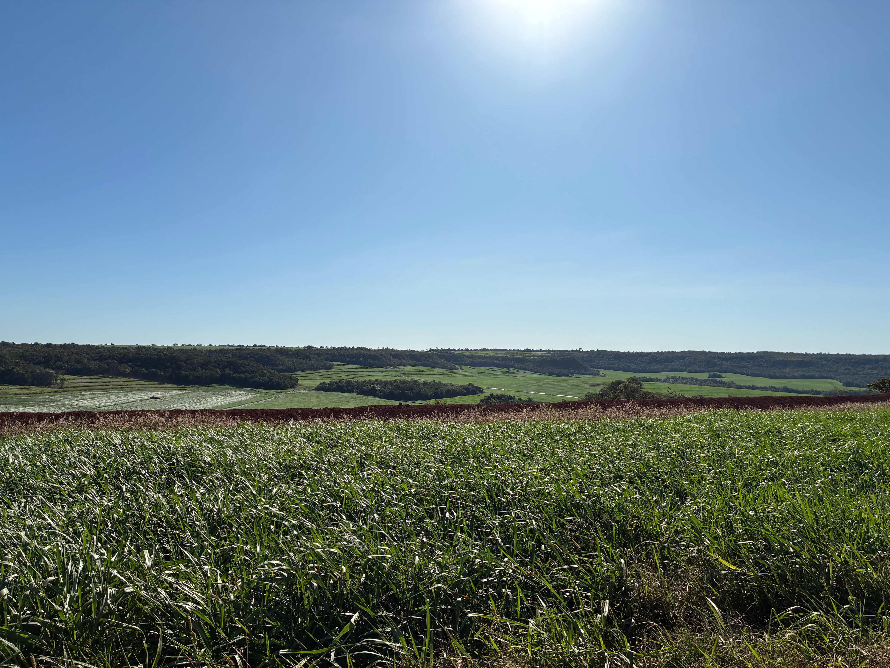
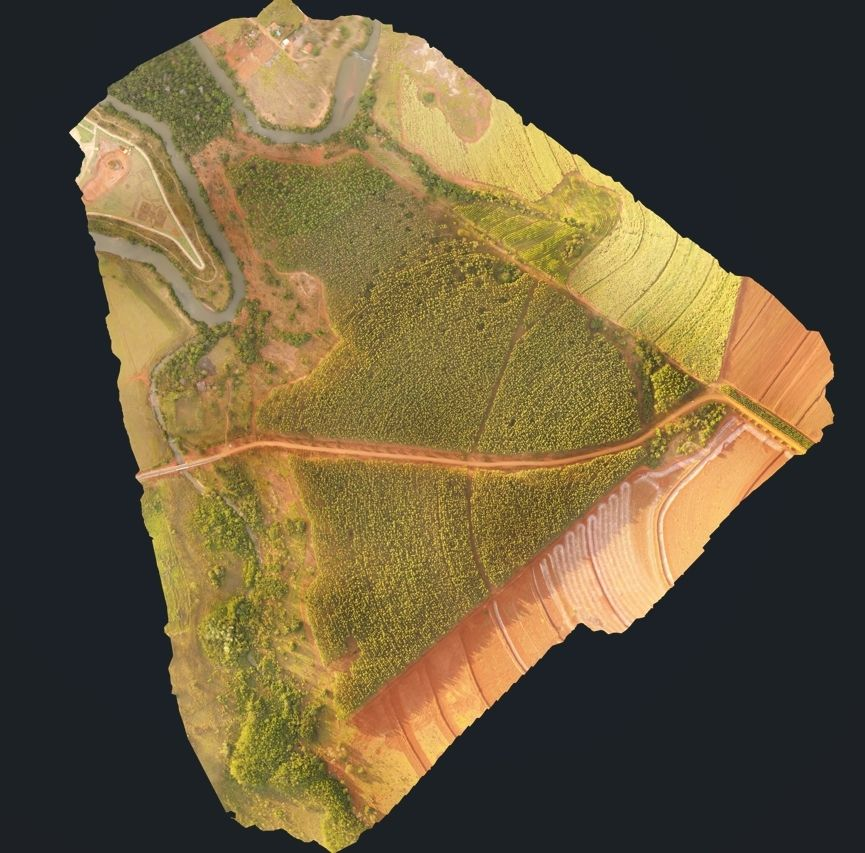
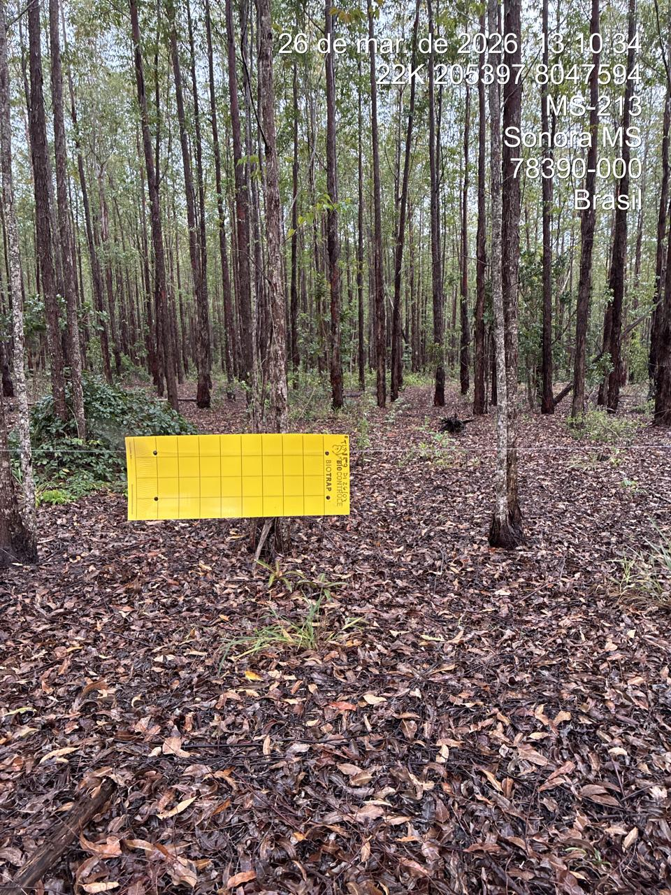
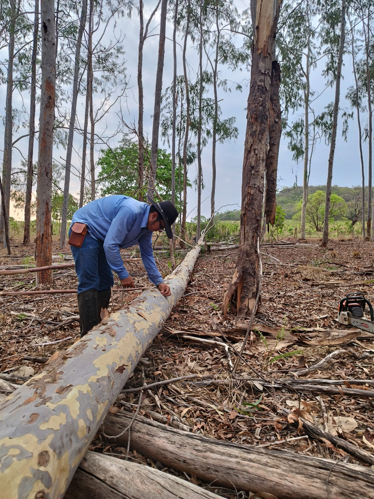
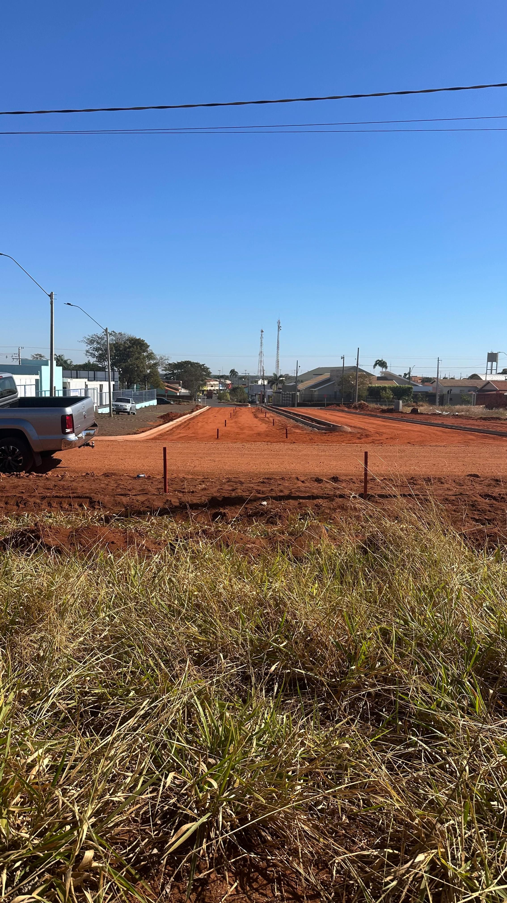
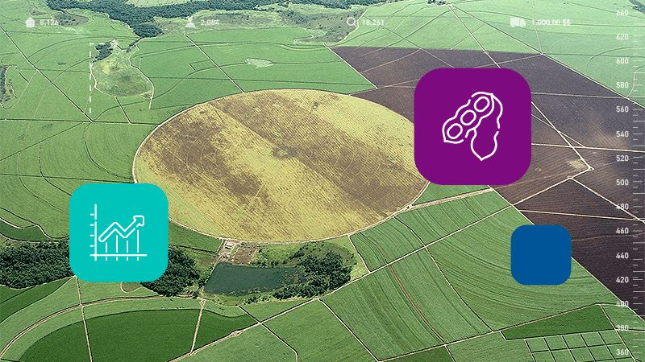

Nossos Serviços

Georreferenciamento
Georreferenciamento de Imóveis rurais em atendimento à lei Lei nº 10.267/2001, desmembramento, remembramento, unificação. Mais de 500 propriedades certificadas junto ao INCRA nos estados de Mato Grosso, Mato Grosso do Sul, Goiás, Minas Gerais e Paraná, código de credenciamento XMMW.

Divisão Personalizada de Imóveis Rurais
Divisão de imóveis em espólio, avaliação e criação de critérios de divisão, acompanhamento de todo trâmite legal até a emissão das matrículas individualizadas. Adequação documental e ambiental em todo o processo.

Cadastro Ambiental Rural (CAR)
Cadastro ambiental rural em atendimento à Lei nº 12.651, de 25 de maio de 2012, adequação e elaboração nos sistemas Siriema, Sicar, Simcar, Semad.

Consultoria e Adequação Ambiental
Consultoria ambiental e adequação de projetos, propriedades rurais e empreendimentos que impactam o meio ambiente. Criação de pátios junto ao IBAMA, emissão de DOF e documentação de empreendimentos madeireiros: carvoeiras, madeireiras, elaboração e acompanhamento dos processos. Laudos técnicos e ambientais.

Projetos de Recuperação de Áreas Degradadas
Projetos para recuperação de áreas degradadas: déficit de reserva legal, adequação de áreas de preservação permanente, erosões e voçorocas, projetos para atendimento a notificações e multas ambientais.

Aerolevantamento
Aerolevantamento para elaboração de mapas temáticos, modelos tridimensionais e ortomosaicos georreferenciados.

Licenciamento Ambiental
Licenciamento ambiental para supressão vegetal (desmatamento), retirada de árvores isoladas, licenciamento de barragens, outorgas, cadastro de recursos hídricos, licenciamento de empreendimentos rurais e carvoarias.

Inventários Florestais
Realização de inventários florestais em florestas nativas e plantadas para determinar produção pré-corte e avaliação e valoração de florestas.

Topografia em Geral para Loteamentos
Serviços especializados em topografia para loteamentos urbanos e rurais, incluindo divisão de terrenos, demarcação de lotes, cálculo de áreas e elaboração de projetos técnicos conforme legislação vigente.

Reposição Florestal
Elaboramos e executamos projetos de Reposição Florestal completos, garantindo a conformidade total com a nova legislação estadual, incluindo o Decreto nº 16.588/2025 e, principalmente, a Resolução Conjunta SEMADESC/IAGRO/IMASUL N. 003/2025. Abrangemos desde a criação e comercialização de cotas até o monitoramento florestal contínuo, atendendo rigorosamente todas as exigências dos órgãos reguladores como IAGRO e IMASUL no Mato Grosso do Sul. Proteja seu patrimônio e garanta a sustentabilidade com nossa expertise.
.
Avaliação de Imóveis Rurais
Laudos técnicos de avaliação de imóveis rurais para compra e venda, financiamento bancário, inventários e processos judiciais. Análise de valor de mercado considerando características físicas, localização e potencial produtivo.